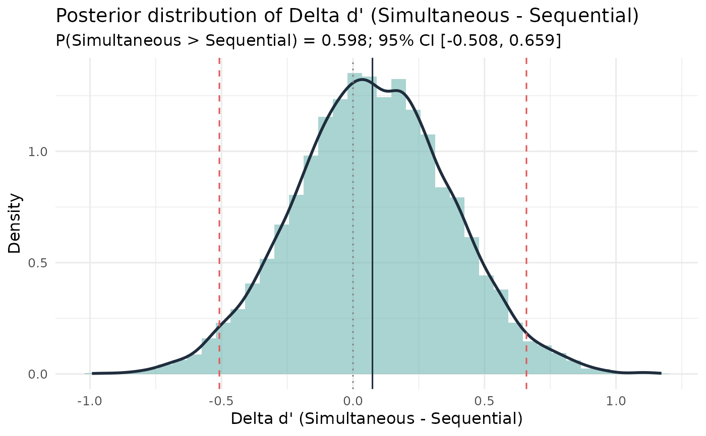

Bayesian Comparison of SDT Sensitivity (d') Between Two Conditions
Source:R/sdt_compare.R
sdt_compare.RdComputes a Bayesian posterior distribution for the difference \(\Delta d' = d'_A - d'_B\) using independent Jeffreys Beta posteriors for the hit and false-alarm rates in each condition.
Usage
sdt_compare(
hits_A,
misses_A,
fas_A,
crs_A,
hits_B,
misses_B,
fas_B,
crs_B,
label_A = "A",
label_B = "B",
alpha = 0.5,
S = 10000,
credible_mass = 0.95
)Arguments
- hits_A, misses_A, fas_A, crs_A
Integer counts for condition A.
- hits_B, misses_B, fas_B, crs_B
Integer counts for condition B.
- label_A, label_B
Character labels for conditions (default "A", "B").
- alpha
Prior concentration for the Beta prior on each rate. Default 0.5 (Jeffreys). Named shortcuts:
"jeffreys","uniform","weak".- S
Number of posterior draws. Default 10000.
- credible_mass
Width of the equal-tailed credible interval. Default 0.95.
Value
An object of class "sdt_compare" containing:
- delta_dprime_draws
Posterior draws of \(\Delta d'\).
- dprime_A_draws, dprime_B_draws
Per-condition d' draws.
- posterior_mean, posterior_median
Posterior summaries of \(\Delta d'\).
- credible_interval
Named lower/upper CI on \(\Delta d'\).
- P_A_greater
Posterior probability that \(d'_A > d'_B\).
- P_B_greater
Posterior probability that \(d'_B > d'_A\).
- dprime_A_mean, dprime_B_mean
Posterior means of each d'.
- frequentist
Output of
compare_sdt_summary()for comparison.- prior_alpha, S, credible_mass
Metadata.
Details
Independent Jeffreys Beta posteriors are placed on the hit and false-alarm rates in each condition: $$HR_A \mid \mathbf{n} \sim \mathrm{Beta}(\text{hits}_A + \alpha,\; \text{misses}_A + \alpha)$$ $$FAR_A \mid \mathbf{n} \sim \mathrm{Beta}(\text{fas}_A + \alpha,\; \text{crs}_A + \alpha)$$ The posterior d' draws are: $$d'^{(s)}_A = \Phi^{-1}(HR_A^{(s)}) - \Phi^{-1}(FAR_A^{(s)})$$ and analogously for B. The posterior of the difference is \(\Delta d'^{(s)} = d'^{(s)}_A - d'^{(s)}_B\), from which \(P(d'_A > d'_B \mid \mathbf{n})\) is directly read off.
The Jeffreys prior (\(\alpha = 0.5\)) handles zero cell counts gracefully
and provides direct probability statements - unlike the asymptotic z-test in
compare_sdt_summary.
References
Macmillan, N. A., & Creelman, C. D. (2005). Detection Theory: A User's Guide (2nd ed.). Lawrence Erlbaum.
Wixted, J. T., & Mickes, L. (2014). A signal-detection-based diagnostic-feature detection model of eyewitness identification. Psychological Review, 121(2), 262-276.
Examples
# Simultaneous vs. sequential lineup comparison
res <- sdt_compare(
hits_A = 45, misses_A = 55, fas_A = 12, crs_A = 88,
hits_B = 38, misses_B = 62, fas_B = 10, crs_B = 90,
label_A = "Simultaneous", label_B = "Sequential"
)
print(res)
#> Bayesian SDT Comparison: Simultaneous vs Sequential
#> Prior: Jeffreys Beta(0.50, 0.50) on HR and FAR
#> Posterior mean d': Simultaneous = 1.049, Sequential = 0.972
#> Delta d' (Simultaneous - Sequential):
#> Posterior mean: 0.077
#> Posterior median: 0.074
#> 95% CI: [-0.508, 0.659]
#> P(d'_Simultaneous > d'_Sequential | data): 0.5984
#> P(d'_Sequential > d'_Simultaneous | data): 0.4016
#> (Frequentist z-test: z = 0.254, p = 0.7994)
plot(res)
